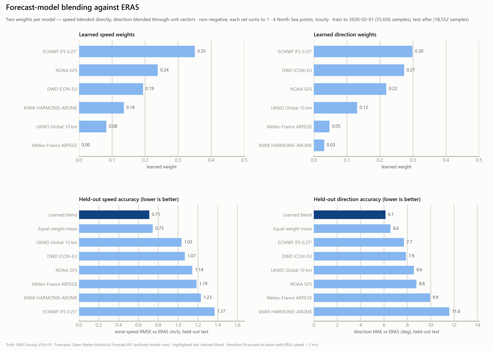
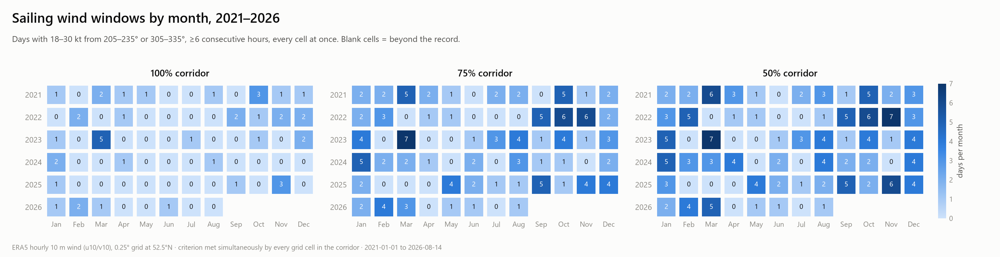
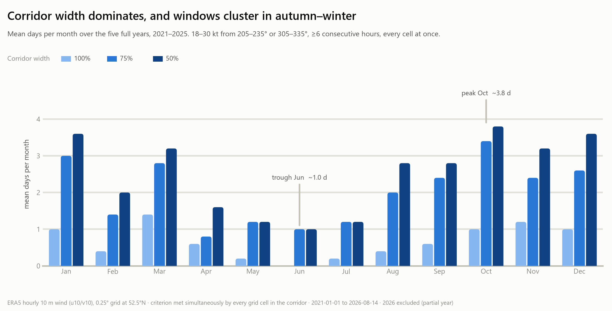
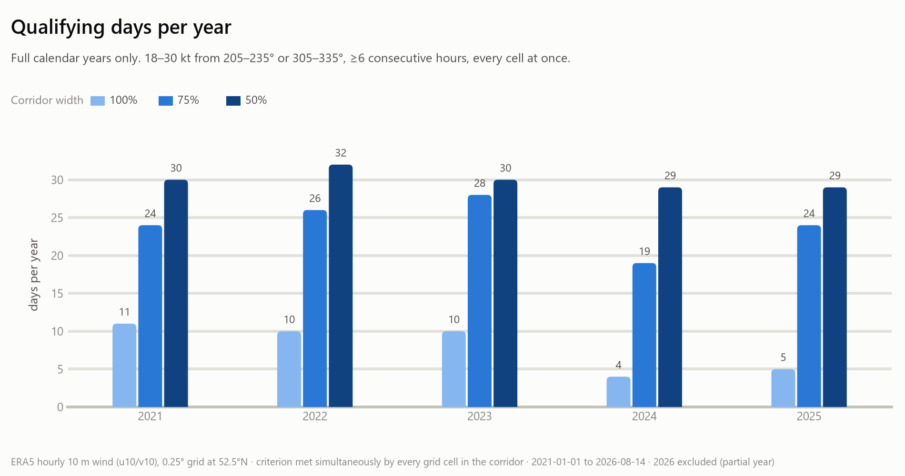
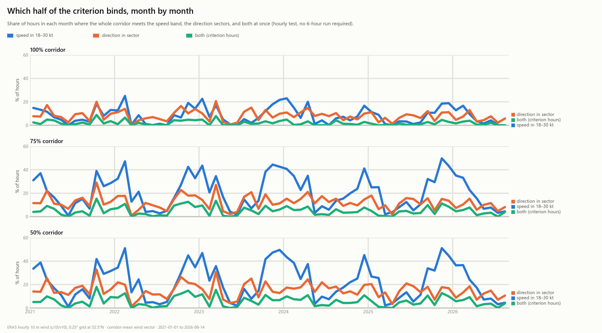
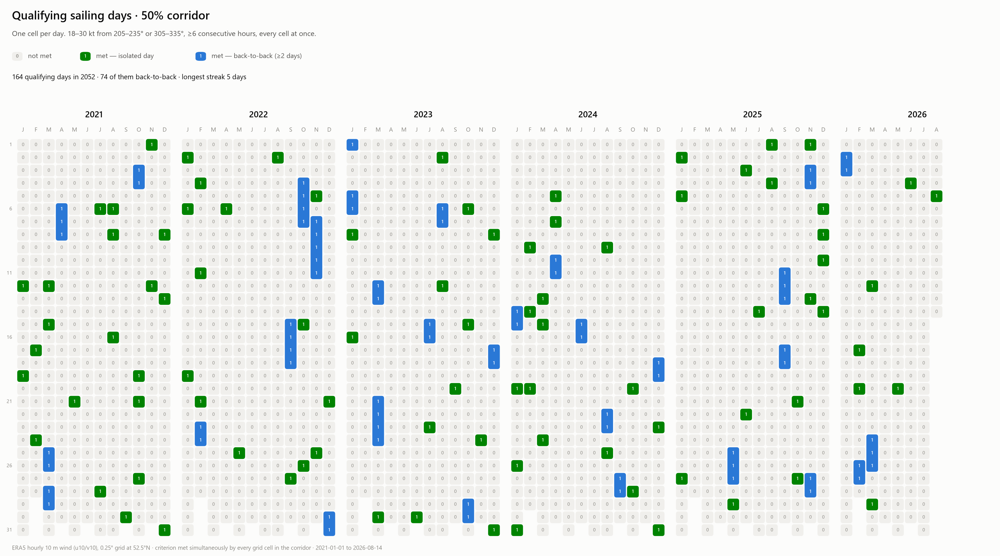
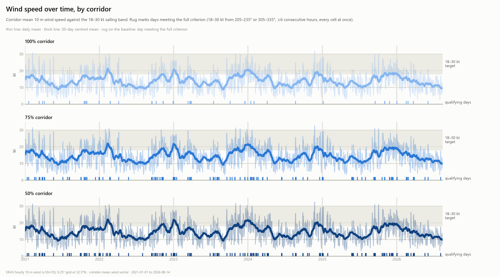
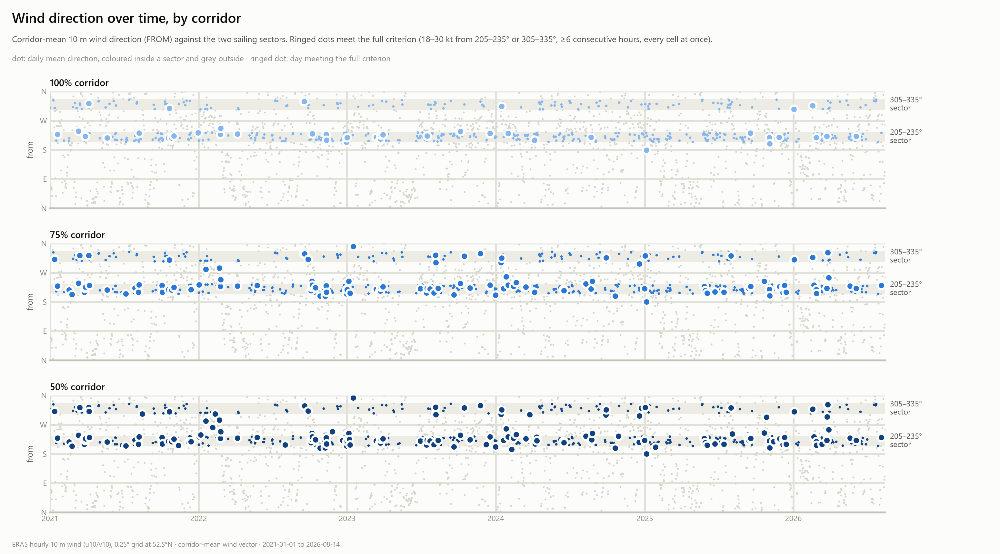
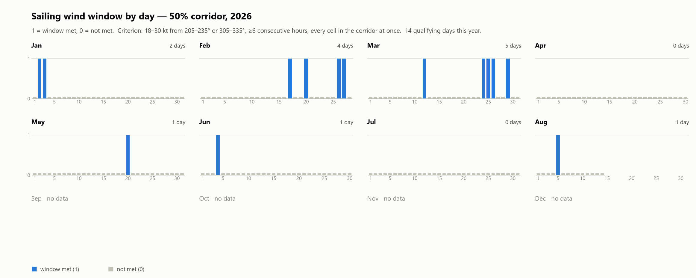

Southern North Sea — wind & sailing conditions
Wind climatology for the DutchSail corridor and a six-model forecast blend trained against ERA5 reanalysis. Live pages use the learned blend weights on today’s Open-Meteo forecasts.
Blend speed RMSE (held-out)
0.71m/s
−31% vs best single model (1.03)
Blend direction MAE (held-out)
6.1°
−21% vs best single model (7.7°)
Models blended
6
ECMWF · GFS · ICON · ARPEGE · HARMONIE · UKMO
Evaluation window
18,552h
final 25% of the record, never trained on
Forecast-model blend
Two learned weights per model — one for wind speed, one for wind direction — fitted so the blended 10 m wind matches ERA5 as closely as possible. All scores below come from the held-out final quarter of the record.

Sailing-window climatology
How often the corridor offers a sailable window, from six years of ERA5 wind.




Window calendars
Day-by-day window flags; pick how much of the corridor must qualify.

Wind climate


Daily windows by year
